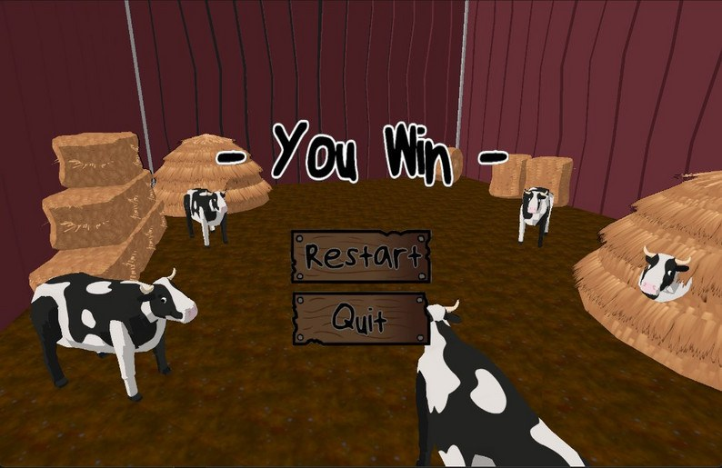

Academic game project · February–March 2026
Moo-F-O
A first-person stealth game set on a farm at night. Playing as a cow, you must sneak past a patrolling UFO, collect a key, and unlock the barn while using hay piles to hide.
- My roles
- Producer / Project Manager · UI implementation · Environment art
- Team
- 9 students · Game Invaders (Team 2)
- Production
- Three-week schedule: prototype, feature-complete milestone, and polish
- Tools
- Unity · Maya · Substance Painter / Designer · Blender · ClickUp
- Status
- Completed academic project
- Play
- Moo-F-O on itch.io
Project brief
Built around the course’s Hallway With Guard structure, the level connects three distinct spaces: open rolling fields, a narrow forest patrol corridor, and a barn-and-cornfield objective area. The UFO follows a NavMesh patrol and can detect and chase the player. The team planned a compact critical path around hiding, retrieving the key, and reaching the barn.
My contributions
- Production coordination: Organized team communication, documented assignments across disciplines, monitored progress, and kept the three-week production plan focused on its milestones.
- Unity UI implementation: Assigned responsibility for UI scripts and functionality for the pause, win, and game-over screens, with art support. The primary main-menu, pause, win, and lose artwork—and the interface wireframes—were made by other team members, not me. Zachary Medina is credited in the production plan for the main UI artwork.
- Environment assets: Worked on cornfield assets, trees, and fencing, and shared responsibility for the key asset. Also contributed grass, dirt, and hay textures.
- Testing: Was assigned final-build testing on another computer during the polish phase.
Production process: three-week plan
The team organized the project around successive milestones to avoid trying to build and polish every system at once. These are the planned tasks documented for each phase, not a claim that every item was finished on schedule.
| Phase | Production focus | My assigned work |
|---|---|---|
| Week 1 · Prototype | Connect three level blockouts, establish the UFO patrol and basic movement, and test a playable key-to-barn loop. | Shared placeholder key asset; production organization and task tracking. |
| Week 2 · Feature complete | Build out chase, hiding, stamina, pickup, barn interaction, UI and environment art. | UI scripts, pause/win/lose functionality, cornfield assets, trees, fencing and shared key asset. |
| Week 3 · Polish | Lighting, sound balancing, animation integration, bug fixes and 90-second critical-path testing. | Final-build testing on another computer and coordinating outstanding deliverables. |
Project scope and production evidence
The production plan documents responsibilities by discipline—level design, programming, art, UI, audio, and project management—and defines the critical systems needed for a complete playthrough. The asset plan also limited the game to 15 unique models, encouraging modular reuse throughout the farm.
Environment art
These modeled assets helped establish a readable farm environment and support the stealth gameplay route. My work focused on vegetation and structural set dressing rather than character or UFO models.


Unity UI implementation — shared screen designs
The UI needed to communicate the basic objective, success, failure, and pause state without interrupting a short stealth experience. I worked on UI scripts, menu behavior and art support. I did not create the wireframes or primary screen artwork. These team screenshots show the interfaces I helped implement.




Challenges and what I learned
The limited three-week timeline and 15-unique-model constraint meant that planning, modular assets, and a clear critical path mattered as much as individual art tasks. This project gave me hands-on practice moving between production coordination, Unity UI work, and environment assets while keeping track of cross-discipline dependencies.
The milestone schedule, assignments, and constraints on this page come from the team's production plan. Planned tasks are not represented as individually verified completions.